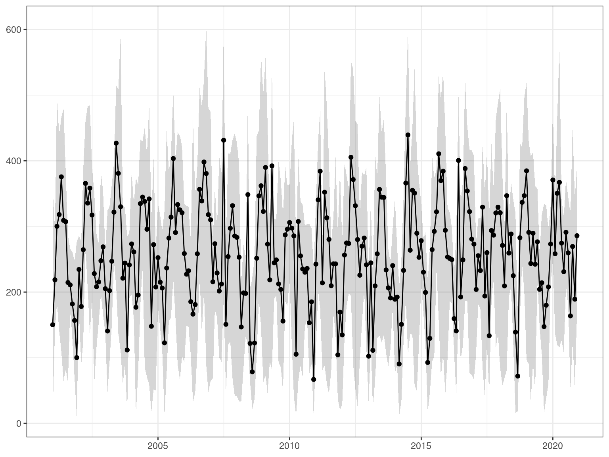
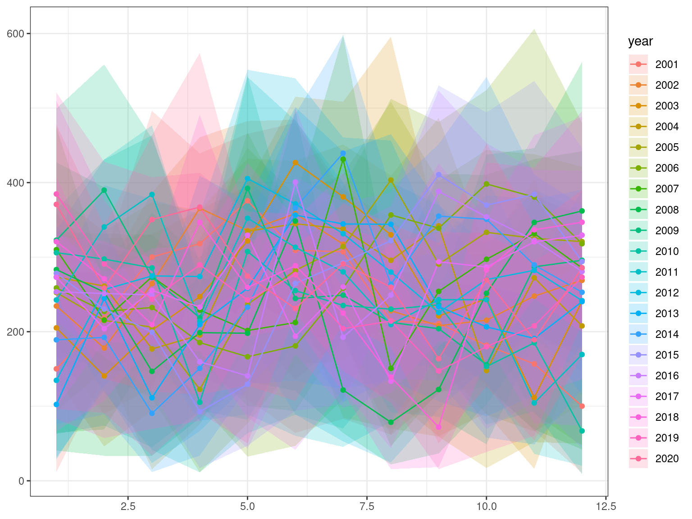
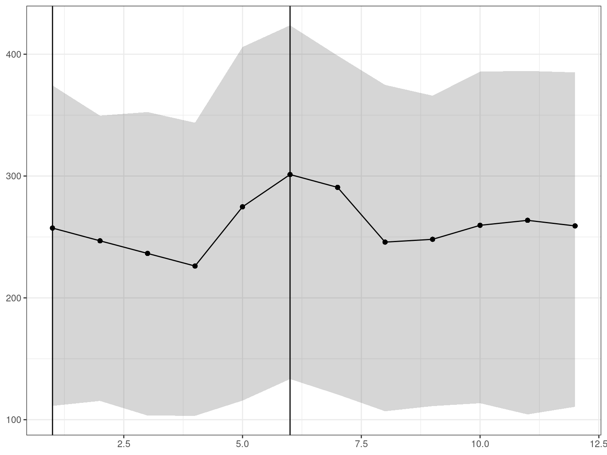
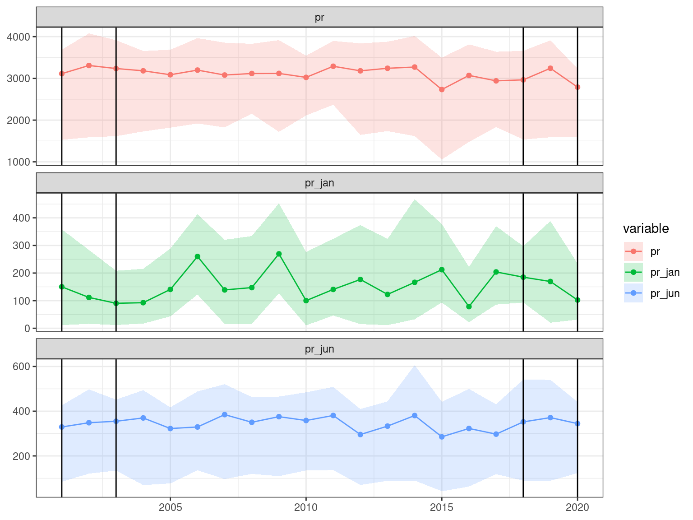
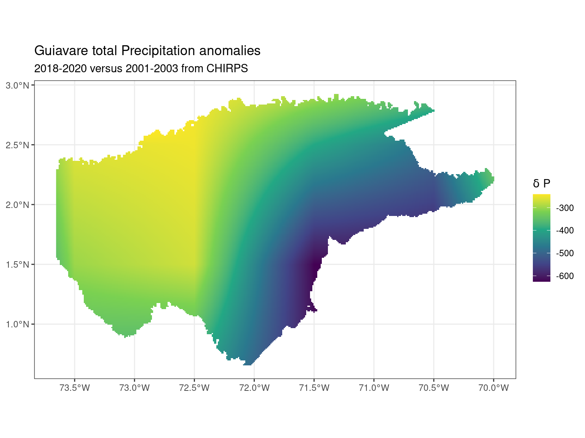
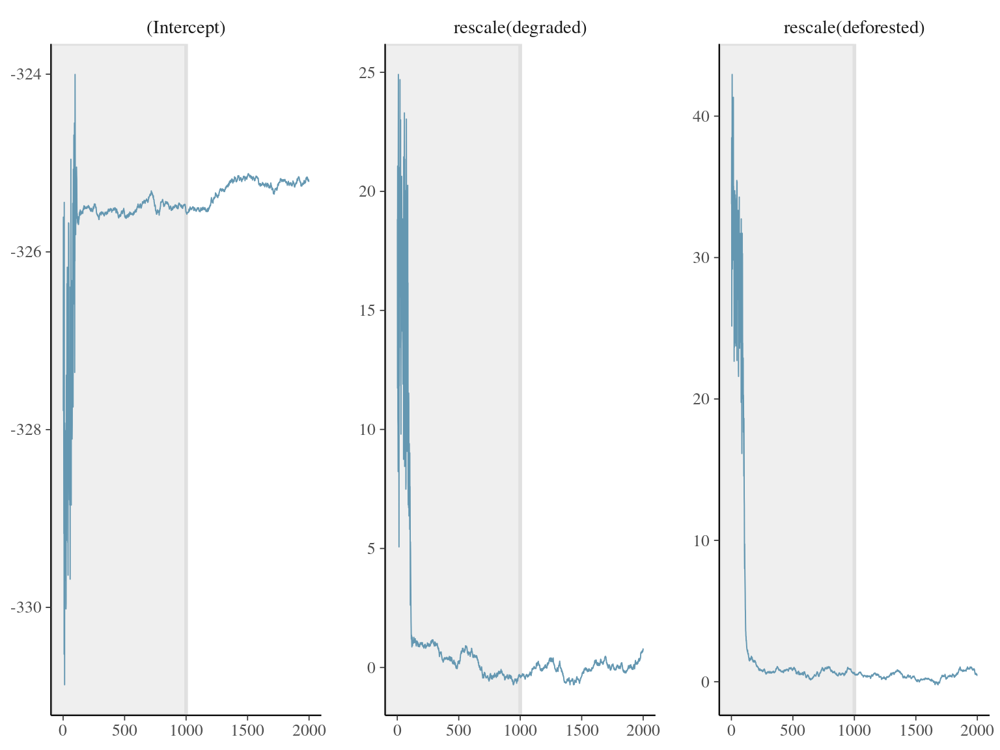
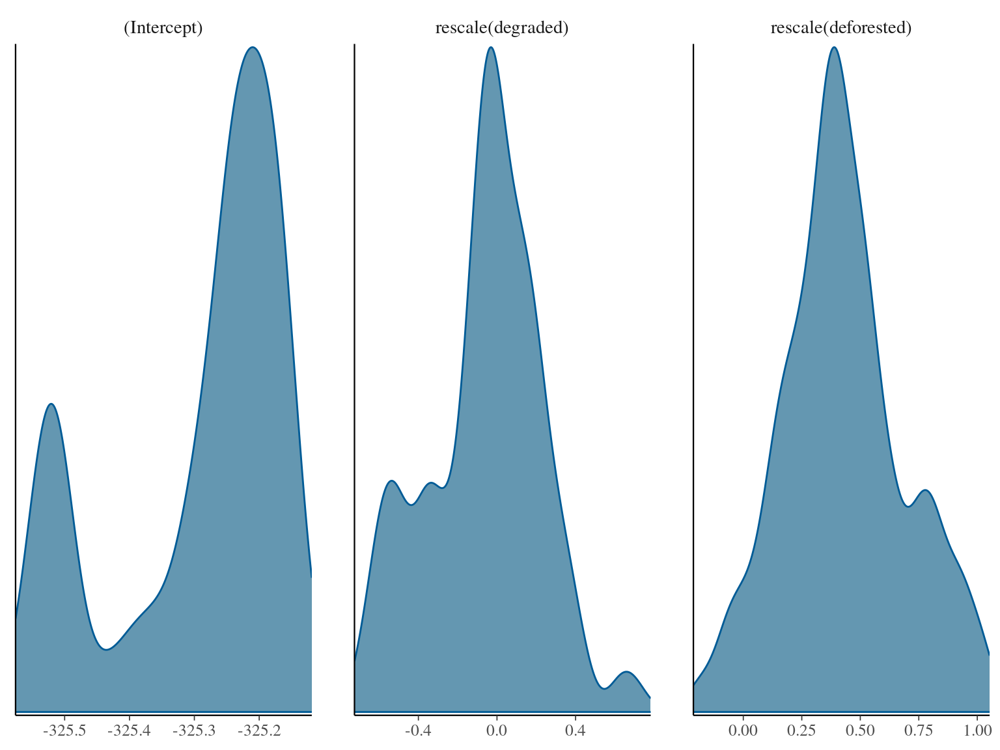
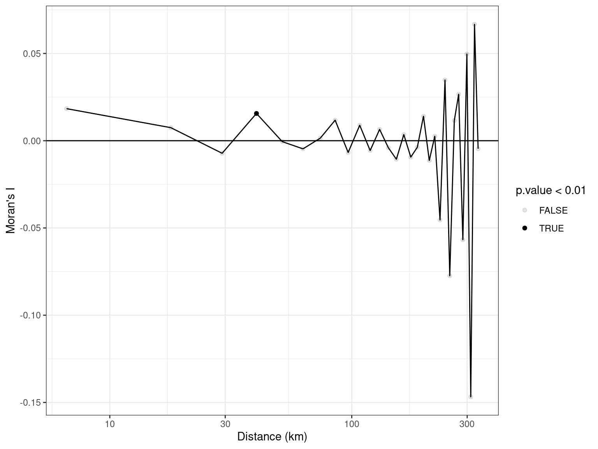
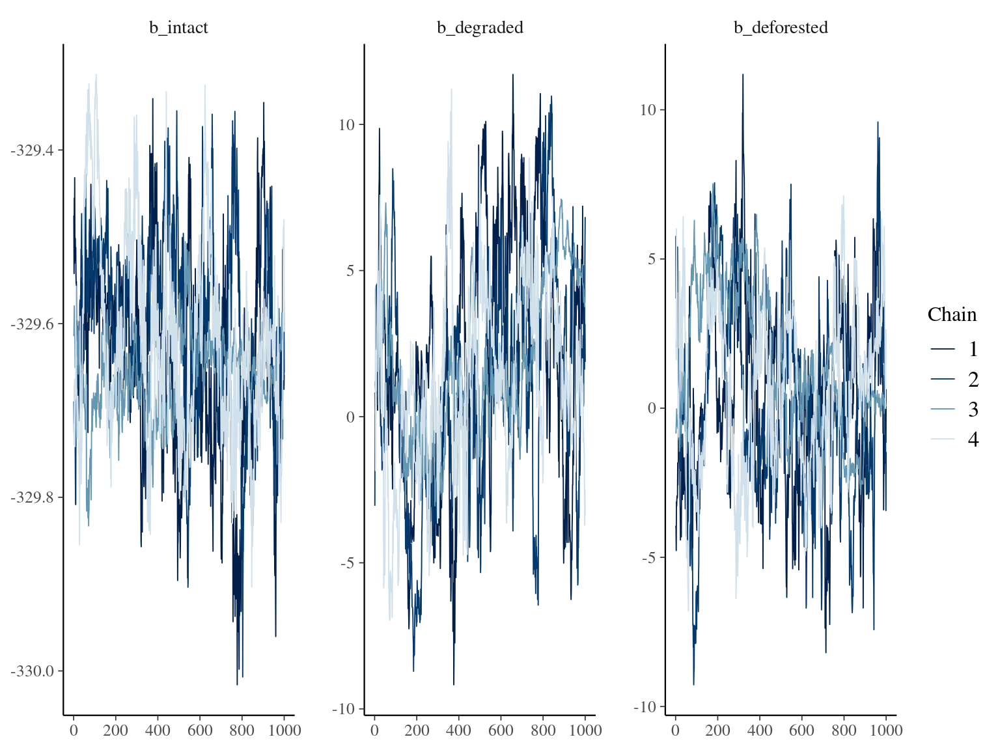
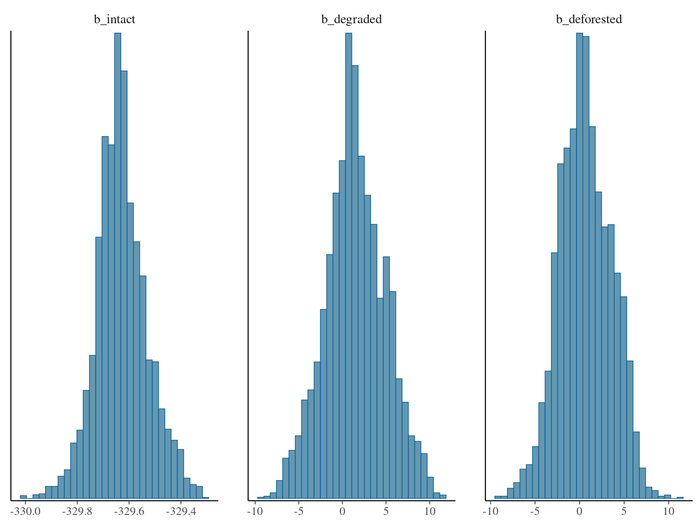

Precipitation
We used CHIRPS data downscaled at 0.01-degree resolution with daily precipitation accumulation. Monthly precipitation precipitation changes were then calculated by (1) summing precipitation for each month of every year, (2) computing the monthly means over two periods at the end (2018 to 2020) and start (2001 to 2003) of the study period. Using 3-y averages reduces the influences of climate variability.




All


Call:
spautolm(formula = pr ~ 0 + intact + degraded + deforested, data = data_test,
listw = nb2listw(data_adj, zero.policy = TRUE), family = "CAR")
Residuals:
Min 1Q Median 3Q Max
-143.7694 -1.1847 0.1397 1.4751 59.9397
Coefficients:
Estimate Std. Error z value Pr(>|z|)
intact -306.0691 6.4723 -47.289 < 2.2e-16
degraded 105.3480 5.8314 18.066 < 2.2e-16
deforested 174.2936 5.1377 33.924 < 2.2e-16
Lambda: 1 LR test value: 45645 p-value: < 2.22e-16
Numerical Hessian standard error of lambda: NaN
Log likelihood: -36595.33
ML residual variance (sigma squared): 86.27, (sigma: 9.2882)
Number of observations: 10000
Number of parameters estimated: 5
AIC: 73201
Non null


Call:
spautolm(formula = pr ~ 0 + intact + degraded + deforested, data = data_test,
listw = nb2listw(data_adj, zero.policy = TRUE), family = "CAR")
Residuals:
Min 1Q Median 3Q Max
-184.24367 -2.54078 0.55098 4.26227 152.18720
Coefficients:
Estimate Std. Error z value Pr(>|z|)
intact -410.9472 3.6168 -113.6217 < 2.2e-16
degraded 36.9502 6.4359 5.7412 9.399e-09
deforested 103.9335 4.7745 21.7685 < 2.2e-16
Lambda: 0.9993 LR test value: 5182.9 p-value: < 2.22e-16
Numerical Hessian standard error of lambda: 0.00015631
Log likelihood: -7643.538
ML residual variance (sigma squared): 192.13, (sigma: 13.861)
Number of observations: 1839
Number of parameters estimated: 5
AIC: 15297
Non null - spNNGP
----------------------------------------
Building the neighbor list
----------------------------------------
----------------------------------------
Building the neighbors of neighbors list
----------------------------------------
----------------------------------------
Model description
----------------------------------------
NNGP Latent model fit with 1839 observations.
Number of covariates 3 (including intercept if specified).
Using the exponential spatial correlation model.
Using 10 nearest neighbors.
Number of MCMC samples 2000.
Priors and hyperpriors:
beta flat.
sigma.sq IG hyperpriors shape=2.00000 and scale=1.00000
tau.sq IG hyperpriors shape=2.00000 and scale=1.00000
phi Unif hyperpriors a=3.00000 and b=30.00000
Source compiled with OpenMP support and model fit using 4 thread(s).
----------------------------------------
Sampling
----------------------------------------
Sampled: 1000 of 2000, 50.00%
Report interval Metrop. Acceptance rate: 93.50%
Overall Metrop. Acceptance rate: 93.50%
-------------------------------------------------
Sampled: 2000 of 2000, 100.00%
Report interval Metrop. Acceptance rate: 91.10%
Overall Metrop. Acceptance rate: 92.30%
-------------------------------------------------
Call:
spNNGP(formula = pr ~ rescale(degraded) + rescale(deforested),
data = data_nn, coords = data_nn[c("x", "y")], method = "latent",
n.neighbors = 10, starting = list(phi = 3/0.5, sigma.sq = 1,
tau.sq = 1), tuning = list(phi = 0.2), priors = list(phi.Unif = c(3/1,
3/0.1), sigma.sq.IG = c(2, 1), tau.sq.IG = c(2, 1)),
cov.model = "exponential", n.samples = 2000, n.omp.threads = 4,
ord = order(data_nn[, "x"] + data_nn[, "y"]), return.neighbor.info = TRUE,
fit.rep = TRUE, sub.sample = list(start = 1000), n.report = 1000)
Model class is NNGP, method latent, family gaussian.
Model object contains 2000 MCMC samples.
Chain sub.sample:
start = 1000
end = 2000
thin = 1
samples size = 1001
2.5% 25% 50% 75% 97.5%
(Intercept) -325.5443 -325.3662 -325.2419 -325.1948 -325.1479
rescale(degraded) -0.6250 -0.2412 -0.0336 0.1287 0.4460
rescale(deforested) -0.0675 0.2615 0.4062 0.5765 0.9608
sigma.sq 179.3628 186.8938 190.9888 195.1104 203.4810
tau.sq 0.0570 0.0697 0.0796 0.0897 0.1052
phi 3.0000 3.0004 3.0014 3.0043 3.0124 


Non null - brms
Running /usr/lib/R/bin/R CMD SHLIB foo.c
using C compiler: ‘gcc (Ubuntu 11.4.0-1ubuntu1~22.04) 11.4.0’
gcc -I"/usr/share/R/include" -DNDEBUG -I"/home/sschmitt/R/x86_64-pc-linux-gnu-library/4.3/Rcpp/include/" -I"/home/sschmitt/R/x86_64-pc-linux-gnu-library/4.3/RcppEigen/include/" -I"/home/sschmitt/R/x86_64-pc-linux-gnu-library/4.3/RcppEigen/include/unsupported" -I"/home/sschmitt/R/x86_64-pc-linux-gnu-library/4.3/BH/include" -I"/home/sschmitt/R/x86_64-pc-linux-gnu-library/4.3/StanHeaders/include/src/" -I"/home/sschmitt/R/x86_64-pc-linux-gnu-library/4.3/StanHeaders/include/" -I"/home/sschmitt/R/x86_64-pc-linux-gnu-library/4.3/RcppParallel/include/" -I"/home/sschmitt/R/x86_64-pc-linux-gnu-library/4.3/rstan/include" -DEIGEN_NO_DEBUG -DBOOST_DISABLE_ASSERTS -DBOOST_PENDING_INTEGER_LOG2_HPP -DSTAN_THREADS -DUSE_STANC3 -DSTRICT_R_HEADERS -DBOOST_PHOENIX_NO_VARIADIC_EXPRESSION -DBOOST_NO_AUTO_PTR -include '/home/sschmitt/R/x86_64-pc-linux-gnu-library/4.3/StanHeaders/include/stan/math/prim/fun/Eigen.hpp' -D_REENTRANT -DRCPP_PARALLEL_USE_TBB=1 -fpic -g -O2 -ffile-prefix-map=/build/r-base-H0vbME/r-base-4.3.2=. -fstack-protector-strong -Wformat -Werror=format-security -Wdate-time -D_FORTIFY_SOURCE=2 -c foo.c -o foo.o
In file included from /home/sschmitt/R/x86_64-pc-linux-gnu-library/4.3/RcppEigen/include/Eigen/Core:88,
from /home/sschmitt/R/x86_64-pc-linux-gnu-library/4.3/RcppEigen/include/Eigen/Dense:1,
from /home/sschmitt/R/x86_64-pc-linux-gnu-library/4.3/StanHeaders/include/stan/math/prim/fun/Eigen.hpp:22,
from <command-line>:
/home/sschmitt/R/x86_64-pc-linux-gnu-library/4.3/RcppEigen/include/Eigen/src/Core/util/Macros.h:628:1: error: unknown type name ‘namespace’
628 | namespace Eigen {
| ^~~~~~~~~
/home/sschmitt/R/x86_64-pc-linux-gnu-library/4.3/RcppEigen/include/Eigen/src/Core/util/Macros.h:628:17: error: expected ‘=’, ‘,’, ‘;’, ‘asm’ or ‘__attribute__’ before ‘{’ token
628 | namespace Eigen {
| ^
In file included from /home/sschmitt/R/x86_64-pc-linux-gnu-library/4.3/RcppEigen/include/Eigen/Dense:1,
from /home/sschmitt/R/x86_64-pc-linux-gnu-library/4.3/StanHeaders/include/stan/math/prim/fun/Eigen.hpp:22,
from <command-line>:
/home/sschmitt/R/x86_64-pc-linux-gnu-library/4.3/RcppEigen/include/Eigen/Core:96:10: fatal error: complex: Aucun fichier ou dossier de ce type
96 | #include <complex>
| ^~~~~~~~~
compilation terminated.
make: *** [/usr/lib/R/etc/Makeconf:191 : foo.o] Erreur 1 Family: gaussian
Links: mu = identity; sigma = identity
Formula: pr ~ 0 + intact + degraded + deforested + car(W, type = "icar")
Data: data_test (Number of observations: 1000)
Draws: 4 chains, each with iter = 2000; warmup = 1000; thin = 1;
total post-warmup draws = 4000
Correlation Structures:
Estimate Est.Error l-95% CI u-95% CI Rhat Bulk_ESS Tail_ESS
sdcar 35.65 0.81 34.41 37.83 2.61 5 12
Population-Level Effects:
Estimate Est.Error l-95% CI u-95% CI Rhat Bulk_ESS Tail_ESS
intact -329.63 0.10 -329.82 -329.41 1.11 54 163
degraded 1.51 3.44 -5.45 8.49 1.14 22 68
deforested 0.65 2.90 -4.94 6.04 1.09 66 253
Family Specific Parameters:
Estimate Est.Error l-95% CI u-95% CI Rhat Bulk_ESS Tail_ESS
sigma 0.43 0.19 0.10 0.78 2.06 5 12
Draws were sampled using sampling(NUTS). For each parameter, Bulk_ESS
and Tail_ESS are effective sample size measures, and Rhat is the potential
scale reduction factor on split chains (at convergence, Rhat = 1).
